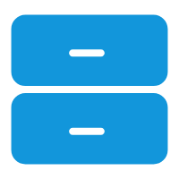
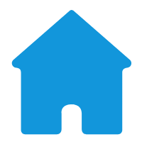

我的简历My Resume
个人信息（Personal Info）
- 姓 名：张佳信
- 出生年月：1998.02
- 民 族：汉
- 身 高：165cm
- 电 话：13095632739
- 政治面貌：共青团员
- 邮 箱：mussessien@163.com@qq.com
- 毕业学校：嘉兴学院
- 住 址：广东省东城市
- 学 历：全日制本科
 教育背景（Eduction）
2017.09 - 2021.06
嘉兴学院
电子信息工程
前端技能（Slills）
- 熟练基本知识（HTML,CSS,JavaScript)，熟悉Less，Sass等预处理语言，具有扎实的JS基础
- 熟练掌握常用ES6语法，如箭头函数，解构赋值，Promise等知识。
- 理解HTTP协议，浏览器工作原理，熟练使用谷歌开发者工具，能根据相应报文和状态码解决 web 语义化、查找问题根源。
- 熟悉Vue2全家桶开发（vue+vuex+axios+vue-router），并使用其开发过个人代码。
- 熟悉Element UI、 Ant Design等常用UI库，并能熟练使用。
- 了解微信小程序，React，uniapp开发
工作经历（Company）
2021.7 - 2022.6
杭州图洋信息科技有限公司
web前端
- 公司5.0项目前端开发，负责编写前端页面，物联网设备效果联调，项目现场安装
- 项目维护及迭代，优化界面交互，提高用户体验
- 图为视三维地图5.0：JavaScript，Jquery，Ant Design，Echarts
- 根据UI设计图实现前端静态页面。
- 协调后端人员对现场提供的数据进行处理，实现物联网设备联调效果。
- 编写地图文档，现场布置地图安装环境。
- 协调处理项目现场BUG。
- 公司自用问卷调查系统：vue2.0全家桶+Element-UI框架。
- 与后端同事协调确定接口对接
- 设计基本静态页面
- 封装表单、列表组件，封装常用弹框组件
- 利用Qrcode库生成问卷页面二维码
2020.7 - 2021.3
青柠电商有限公司
web前端
- 主要从事电商后台管理系统开发，负责静态页面编写，常用简单组件封装
- 青柠电商后台管理系统：vue2.0+vue-router+vuex+Element-UI+axios
- 基于vue进行开发，配合UI搭建页面
- axios请求封装，包含全局错误处理、http状态码处理、取消重复请求。
- 使用vue-router统一路由管理，实现路由懒加载。
- 封装登陆模块，实现用户页面跳转以及用户权限登陆设置。
- 封装常用表单、弹框组件，实现更好的组件复用。
 小收获（Study）
- vue-images-lazy-load：图片懒加载指令化。
- vue-audios：一款简易的音频播放+管理器。
- vuex：页面刷新时数据会丢失，需要提前做好保存。